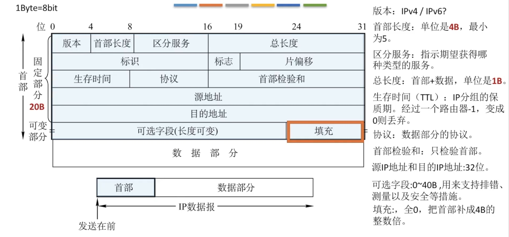

网络层
基本概念
主要任务是把分组从源端传到目的端，为分组交换网上的不同主机提供通信服务。
网络层传输单位是数据报
功能：
- 路由选择与分组转发 --- 最佳路径
- 异构网络互联
- 拥塞控制 --- 全局性
数据交换方式
一.电路交换
建立连接 => 通信 => 释放连接
e.g.：电话网络
特点：独占资源
优点：
- 通信时延小
- 有序传输
- 没有冲突
- 实时性强
缺点：
- 建立连接时间长
- 线路独占，使用效率低
- 灵活性差
- 无差错控制能力
二.报文交换
报文：源应用发送的信息整体。
特点：存储转发
优点：
- 无需建立连接
- 存储转发，动态分配线路
- 线路可靠性较高
- 线路利用率较高
- 多目标服务
缺点：
- 有存储转发时延
- 报文大小不定，需要网络节点有较大缓存空间
三.分组交换
分组：把大的数据块分割成小的数据块。
特点：分组存储转发
优点：相对于报文交换，存储管理更容易 --- 对缓存要求更小
缺点：
- 有存储转发时延 --- 会比报文交换小
- 需要传输额外的信息量
- 乱序到目的主机时，需对主机排序重组
tip：1字节（Byte）=8比特（bit）
1.数据报方式
数据报方式为网络层提供无连接服务。 --- 因特网
无连接服务：不事先为分组的传输确定传输路径，每个分组独立确定传输路径，不同分组传输路径可能不同。
特点：
- 无连接
- 每个分组携带源和目的地址
- 路由器根据分组的目的地址转发分组：
基于路由协议/算法构建转发表 => 检索转发表 => 每个分组独立选路
2.虚电路方式
虚电路方式为网络层提供连接服务。 --- 数据报方式和电路交换方式的结合
连接服务：首先为分组的传输确定传输路径（建立连接），然后沿改路径（连接）传输系列分组，系列分组传输路径相同，传输结束后拆除连接。
虚电路：一条源主机到目的主机类似于电路的路径（逻辑连接），路径上所有结点都要维持这条虚电路的建立，都维持一张虚电路表，每一项纪录了一个打开的虚电路信息。
建立连接（虚电路建立） => 数据传输 => 释放连接（虚电路释放）
数据报&虚电路 对比

对比

路由算法及路由协议概述
路由算法
最佳路由：“最佳”只能是相对于某一种特定要求下得出的较为合理的选择而已。
静态路由算法
管理员手工配置路由信息。
缺点：路由更新慢，不适用大型网络。
动态路由算法
路由器间彼此交换信息，按照路由算法优化出路由表项。
缺点：算法复杂，增加网络负担
全局性：链路状态路由算法 OSPF
所有路由器掌握完整的网络拓扑和链路费用信息。
分散性：距离向量路由算法 RIP
路由器只掌握物理相连的邻居及链路费用。
路由协议
分层次
自治系统AS：在单一的技术管理下的一组路由器，而这些路由器使用一种AS内部的路由选择协议和共同的度量以确定分组在该AS内的路由，同时还使用一种AS之间的路由协议以确定在AS之间的路由。
一个AS内的所有网络都属于一个行政单位来管辖，一个自治系统的所有路由器在本自治系统内都必须连通。
内部网关协议 IGP
一个AS内使用的 --- RIP、OSPF
外部网关协议 EGP
AS之间使用的 --- BGP
IP数据报
IP数据报格式


最大传输单元MTU
链路层数据帧可封装数据有上限。以太网的MTU是
1500字节--- 网络层数据分片
首部含义：
- 标识：同一数据报的分片使用同一标识。
- 标志：只有2位有意义
×__- 中间位DF (Don't Fragment)
DF=1，禁止分片
DF=0，允许分片 - 最低位MF ( More Fragment)
DF=1时才有效
MF=1，后面“还有分片”
MF=0，代表最后一片/没分片
- 中间位DF (Don't Fragment)
- 片偏移：指出较长分组分片后，某片在原分组中的相对位置。以8B为单位。
除了最后一个分片，每个分片长度一定是8B的整数倍。
IPV4地址


网络地址转换 NAT
NAT【Network Address Translation】
在专用网连接到因特网的路由器上安装NAT软件，安装了NAT软件的路由器叫NAT路由器，它至少有一个有效的外部全球IP地址。